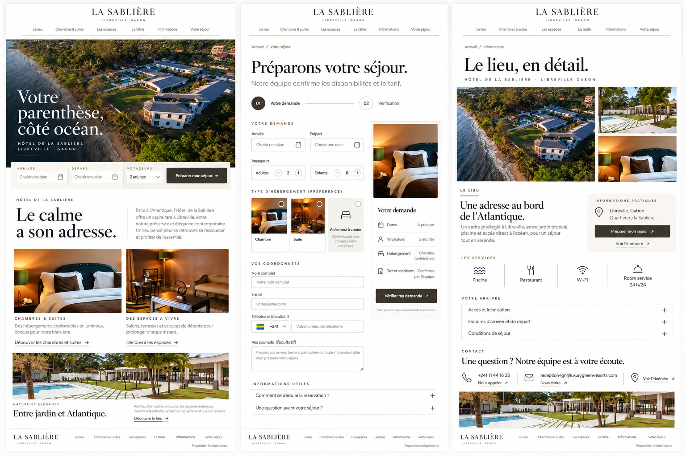

Independent proposal. Generated art-direction study using hotel reference photography.
The place, before the booking.
A calm digital welcome for a hotel in Libreville. Editorial photography introduces the place. A clear enquiry journey prepares a personal response.
UX & UI design / Desk research / Responsive prototype
01 / Context
A digital experience grounded in the place.
Hôtel de la Sablière presents a coastal setting, accommodation, shared spaces and dining. I used its public website and Instagram imagery to explore how a more coherent interface could communicate that atmosphere and support a stay enquiry.
The scope: desktop and mobile discovery, accommodation detail, spaces, dining, practical information, contact and an enquiry flow with review and recovery states.
This is an independent proposal created in October 2026. It was not commissioned or approved by the hotel. No client interviews, usability-test findings or commercial results are claimed.
02 / Research
Evidence first. Hypotheses stay visible.
Observed: the official hotel website publishes rooms and suites, dining, a pool and contact information. Its photography shows warm interiors, natural details and the coastal setting.
Design hypothesis: clearer practical information and a structured enquiry could help visitors prepare a more complete request. Public pages alone cannot prove the current site’s conversion problems.
I organized the visitor’s decisions around discovering the place, choosing a preference and understanding what follows a request. Couple, business and family scenarios are working hypotheses to test.
Operational unknowns: current room categories, capacities, rates, arrival rules, accessibility, response times and the hotel’s handling of requests need confirmation.
Sources: Official hotel website ↗ and Official Instagram ↗.
03 / Direction
Luxury through restraint and precision.
The identity combines charcoal, warm stone and restrained bronze. Cormorant Garamond gives the headings an editorial presence. Manrope keeps forms and practical information legible.
Four Seasons informed the study of large photography, clear destination navigation and service-oriented actions. I adapted those principles to La Sablière’s own imagery, without copying its logo or claiming an affiliation.
The photography carries the atmosphere. White space, consistent alignment and deliberate wording support it. Colour alone does not establish a luxury experience.
04 / System
One visual contract across the journey.
The system defines white #FFFFFF, charcoal #242622, warm stone #F5F2EC, bronze #75634B and secondary text #66685F. UI controls use a darker border #86887E. Bronze adds emphasis in small doses.
Desktop layouts use 96 px margins at 1440 px. Mobile layouts use 24 px margins. Spacing follows a shared scale. Buttons are 48 px high with a 2 px radius. Display headings use Cormorant Garamond, while body text and controls use Manrope.
Accessibility target: WCAG 2.2 AA. Persistent labels, visible focus, text errors, a keyboard-closeable gallery and preserved request data are implemented in the local prototype. These checks do not establish full compliance.
The portfolio around this case study uses my existing Neue Montreal system. The hotel identity belongs inside the project, keeping the portfolio itself consistent.
05 / Journey
A personal enquiry with a clear next step.
Discovery branches into accommodation, spaces, dining and practical information. The stay enquiry has two steps: enter the request, then review it. Visitors can correct the recap before submitting.
“Préparer mon séjour” starts the journey. “Vérifier ma demande” invites review. “Envoyer ma demande” describes transmission. “Votre réservation n’est pas encore confirmée” makes the result explicit.
The prototype simulates reception and recovery states without sending data to the hotel. A real integration would need an availability source, privacy terms, reliable submission handling and an agreed staff workflow.
06 / Validation
The next iteration needs people and operations.
The next research cycle would confirm the hotel’s services and operational data, then test representative visitors. Tasks would include choosing an accommodation, finding arrival information, correcting dates and explaining whether a stay is confirmed.
Observe completion without assistance, critical errors, recovery and understanding of the received-state wording. There are no measured results yet.
Next iteration: confirm operational content, test the request journey and refine the design from observed behaviour.
The transferable luxury-design skill is precision: make the setting credible, the information legible and the service transition explicit. Watchmaking would require a different content model for references, dimensions, materials, craftsmanship and after-sales care.
The first gesture
Have a good challenge?Let’s talk.